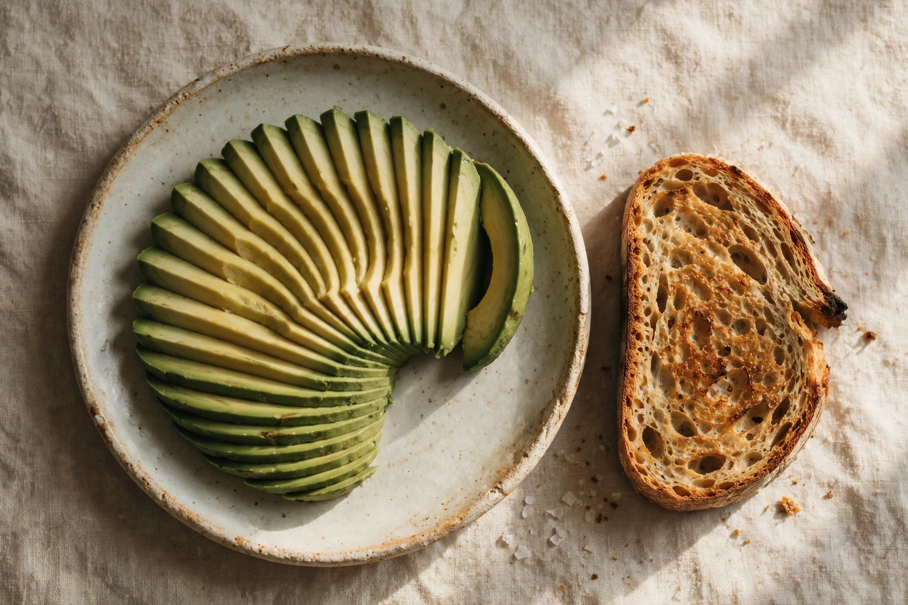
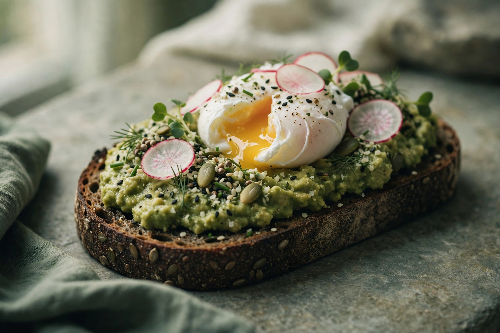
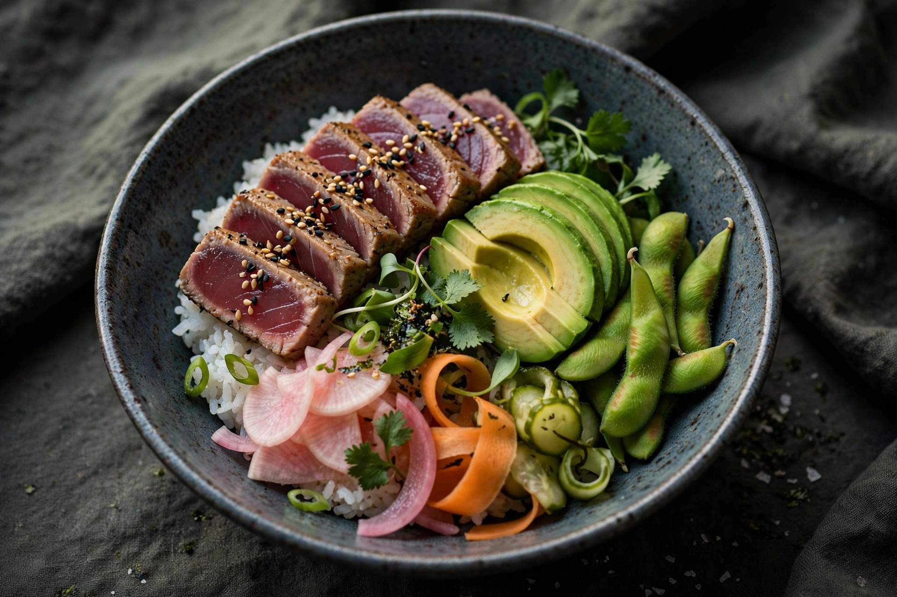
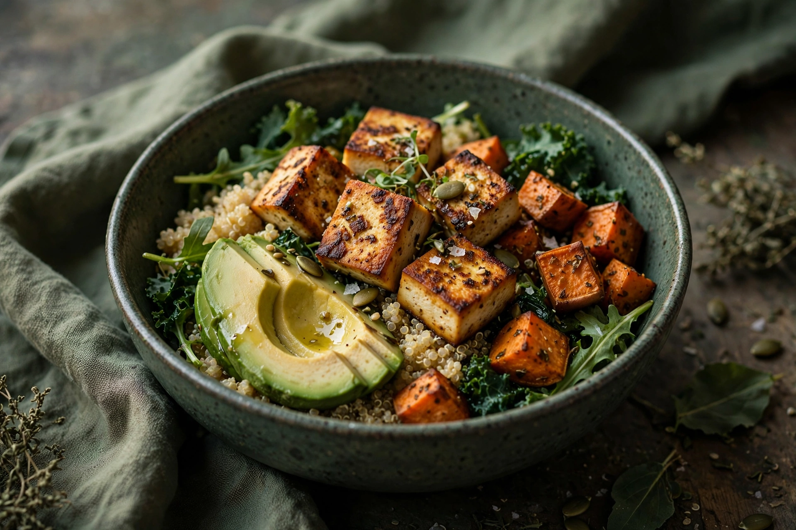
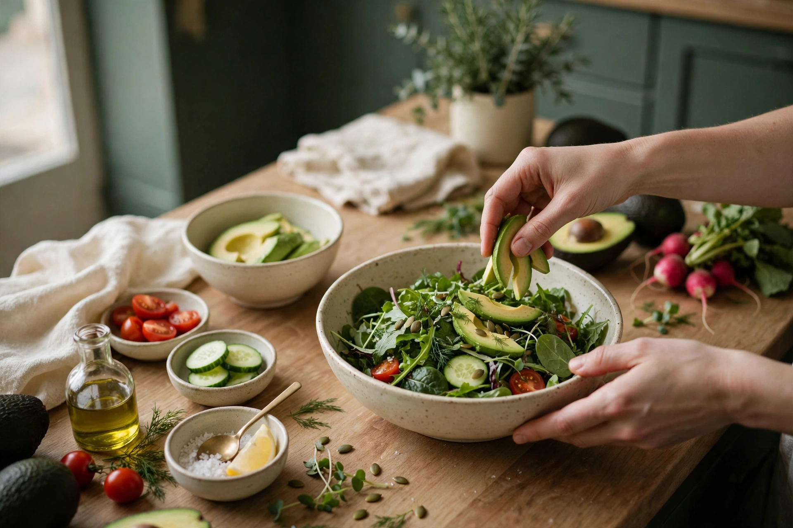
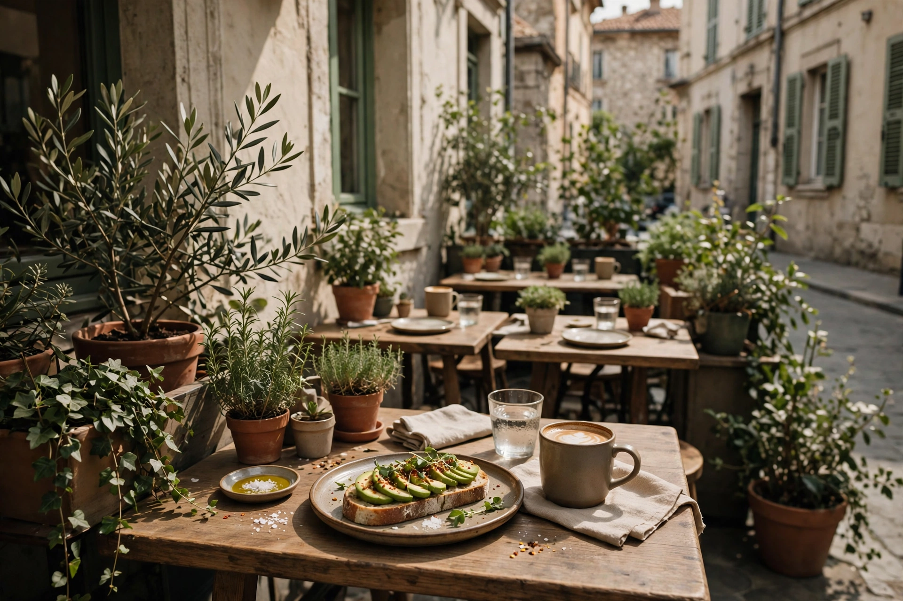

Le comptoir ouvre
Tout est fait maison, préparé pour le service du midi : avocats ouverts à la commande, salades composées, bowls montés au comptoir.
Salades, poke bowls et toasts à l'avocat, faits maison, le midi seulement.
Sélectionné par Genève Tourisme dans « Manger sain à Genève »

La maison construit tout autour de l'avocat. Voici ce que sa propre carte, et Genève Tourisme, racontent d'elle.
La signature : l'avocat en éventail sur toast. Coloré, frais, Genève Tourisme le dit « très Instagram ».
Le brunch de la maison, construit autour de l'avocat, pour les midis qui prennent leur temps.
Le thon juste saisi, à la japonaise, la touche fraîche de la carte.
Le poke bowl au thon de la maison, frais, coloré, complet.
Le bowl végétal au tofu, la réponse de la maison aux envies légères.
Les salades du midi, composées fraîches au comptoir.
La carte vit au rythme des jours : cette page ne montre pas de prix, car la maison n'en publie pas en ligne. Un plat vous fait envie ? Appelez avant de passer.




Faites glisser pour parcourir →
AvoBreak ne sert que le midi, du lundi au vendredi. Toute la maison tient dans ce court créneau, et c'est ce qui fait son charme.
Tout est fait maison, préparé pour le service du midi : avocats ouverts à la commande, salades composées, bowls montés au comptoir.
Aux Eaux-Vives, la pause de midi se prend dehors quand le soleil est là, Genève Tourisme la recommande pour les déjeuners ensoleillés.
Le service se termine. On se retrouve le prochain jour de semaine, dès 10 h 30, même rue, même éventail.

« Ever dreamt of an avocado bar? AvoBreak has done it! »
Genève Tourisme, « Manger sain à Genève » (en anglais)
| Lundi à vendredi | 10 h 30 à 14 h 00 |
|---|---|
| Samedi | Fermé |
| Dimanche | Fermé |
Horaires selon le profil Google de la maison, un doute ? Un coup de fil avant de passer.
AdresseRue Adrien-Lachenal 6, 1207 Genève
Téléphone022 559 74 77
Instagram@avobreak
FacebookLa page de la maison